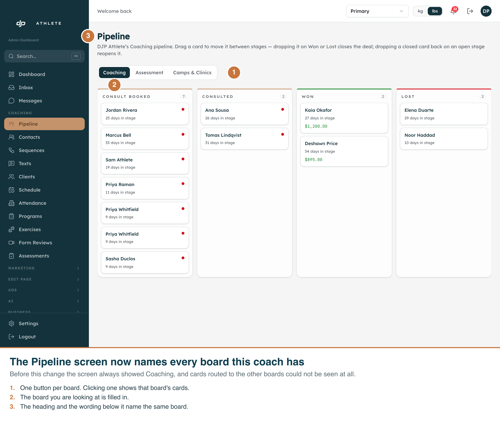
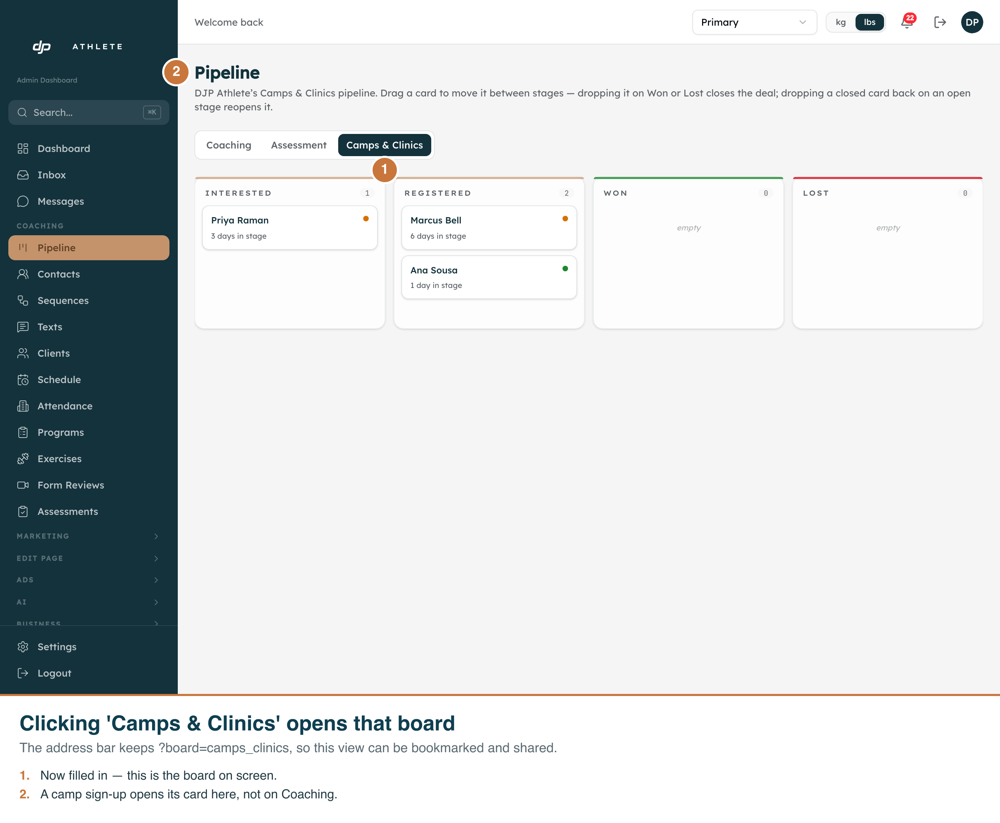
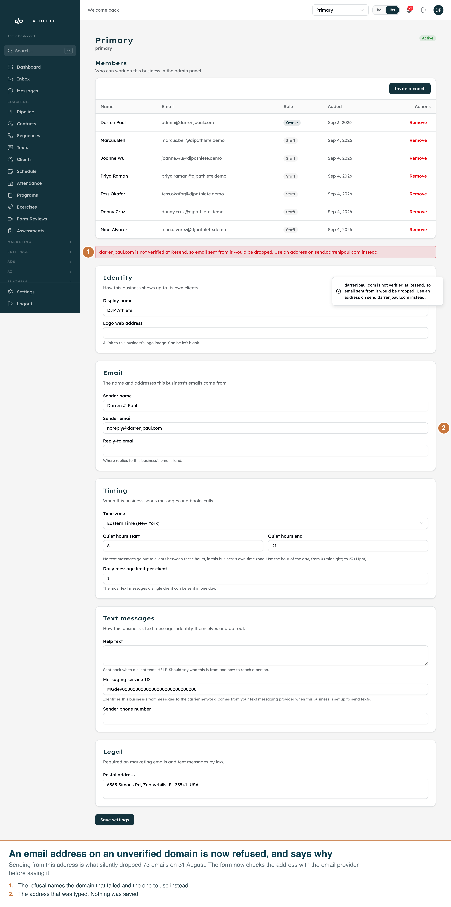
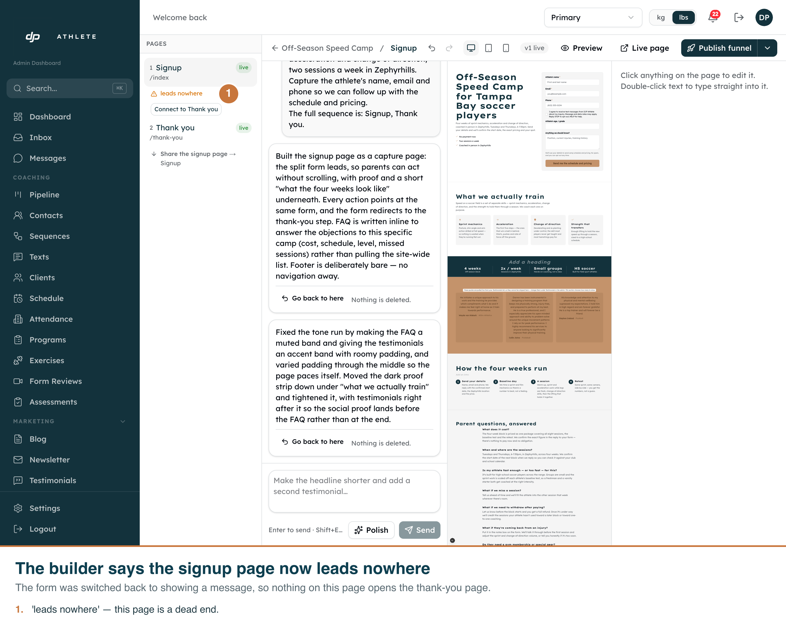
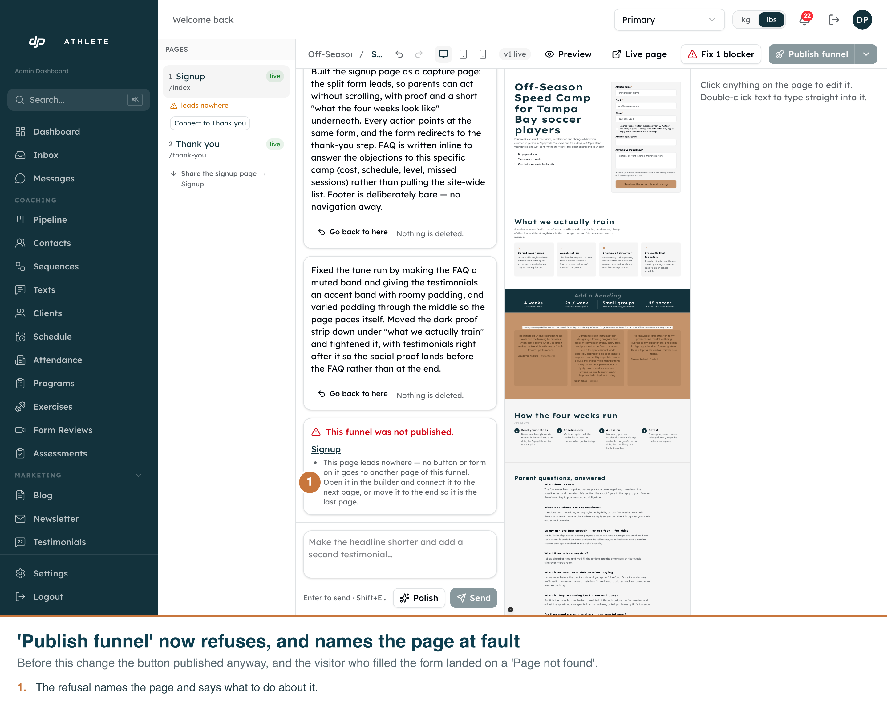
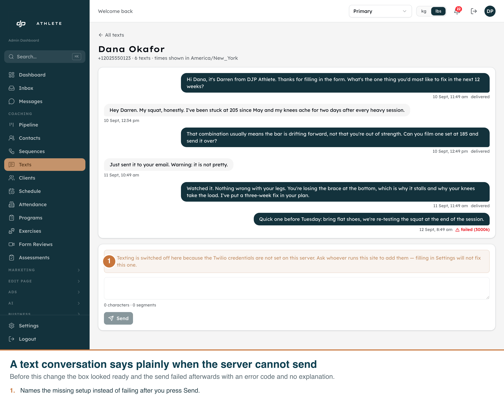

Lead Engine audit fixes — annotated evidence
Branch fix/lead-engine-audit-2026-09-13 · captured 13 September 2026 against the real admin on the dev clone
Every image below is the actual product screen at its real route, driven with Playwright by
scripts/capture-lead-engine-fixes.mjs. Nothing here is a mockup or a preview harness.
The callouts are burned into each PNG, so any file opens on its own and explains itself.
The admin is light-only by design (see CLAUDE.md), so there is no dark pass to take.
01The Pipeline screen names every board
Audit §4 item 7. /admin/pipeline always read the Coaching board, so cards routed to
Camps & Clinics or Assessment existed in the database and could not be seen by anyone.

- 1
- One button per board the tenant actually has, read from
pipelinesand scoped to that tenant. - 2
- The board being shown is filled in and carries
aria-current, so it is announced, not only coloured. - 3
- The heading and the sentence under it name the same board as the cards.
00257 inserted the last two in one transaction, so they carry
identical created_at and the old single-key sort let them swap between page loads. The final review
caught that; a secondary sort on key now fixes the order.02Switching to a different board
The board is chosen by ?board=<key> on the same screen — no new route, and the value is
validated against the tenant's own boards before it reaches the query.

- 1
- Camps & Clinics is now the filled-in button.
- 2
- Its own stages — Interested, Registered — not Coaching's, so this is genuinely a different board.
03An unverified sender address is refused
Audit §4 item 1. On 31 August the sender address pointed at a domain Resend has never verified and 73 emails were silently dropped. The field was validated for format only, so it could be typed straight back in.

- 1
- The refusal names the domain that failed and the one to use instead. Nothing was saved.
- 2
- The address as typed. The exact address that caused the 31 August fault.
04The builder says a page leads nowhere
Audit §3.1. The builder already showed this warning — and let you publish anyway.

- 1
- The rail's existing warning. Nothing on the Signup page opens the Thank you page.
05Publishing now refuses, and names the page
This is the headline fix. Before it, the button published a funnel whose form redirected to an address the model had guessed from the funnel's name, and the visitor who filled the form landed on "Page not found".

- 1
- The refusal names the page and says what to do. It no longer repeats the page name twice, and it no longer tells the owner to press a control whose label is actually "Connect to Thank you".
06A text conversation says when the server cannot send
Audit §4 item 11. The compose box looked ready whether or not the deployment had Twilio credentials; the send failed afterwards with a bare error code.

- 1
- Names the missing setup before you type, and says that filling in Settings will not fix it — because this is server configuration, not business configuration. Send is disabled.